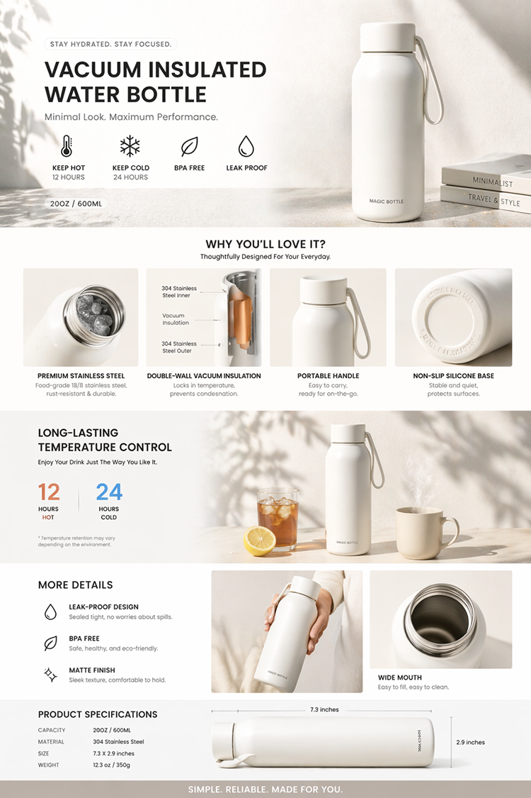
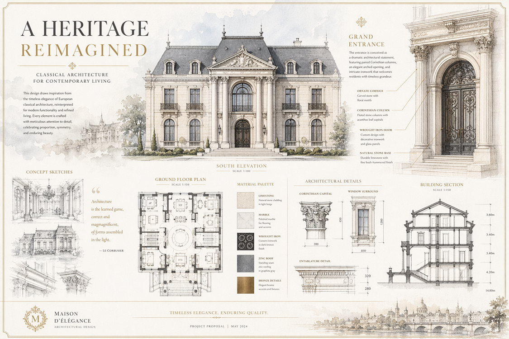
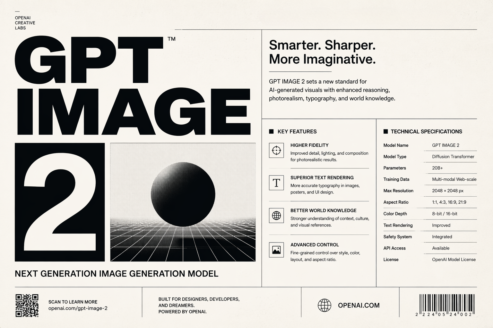

GPT Image 2
开始使用
开始使用
GPT Image 2 创作
用一句提示词生成产品视觉、品牌海报、UI 概念稿和电商素材。面向中国团队的商业图像创作入口。
预计 8 积分/次
支持参考图
作品自动保存
案例
从一条描述生成完整商业视觉
面向真实投放和上架场景，快速生成商品图、直播画面、营销海报、品牌规范和产品界面。
核心能力
四类常用商业图像

清晰文字海报
生成可读标题、海报字体和信息图细节。
应用界面概念
快速探索移动端界面和产品原型视觉。
创意广告系统
把活动主题延展成广告、KV 和社媒素材。
商业产品场景
用商品摄影感构建电商主图和品牌氛围图。

常见问题
什么是 GPT Image 2？
GPT Image 2 是 OpenAI 的图像模型。它基于原生自回归架构，以理解自然语言的逻辑深度来处理图像，从而带来更强的指令遵循和视觉推理能力。
是什么让 GPT Image 2 达到顶尖水准？
核心突破在于更精准的文字渲染。它能在品牌设计、结构化 UI 元素和复杂版式中生成清晰、锐利、可读的排版，减少字符乱码。
它是如何处理视觉逻辑的？
模型会结合世界知识处理纹理、光线、物体层级和空间关系，帮助减少伪影、油腻感和风格偏差，让作品更接近专业摄影棚或真实设计产出。
它适用于 UI/UX 生产吗？
适用。它擅长生成逻辑严密的仪表盘、软件界面、技术截图和移动端页面，可用于专业设计工作流中的概念探索与视觉参考。
GPT Image 2 生成的图片可商用吗？
可以作为商业创作素材使用。实际授权、平台条款和品牌素材合规要求仍建议以你使用的服务协议与业务场景为准。
开始
开始创作